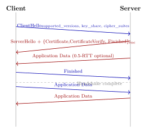

Chapter 16: Transport Layer Security¶
Transport Layer Security is the cryptographic protocol underpinning secure communication on the Internet: HTTPS, SMTPS, IMAPS, FTPS, and hundreds of application protocols rely on it. TLS has evolved through a sequence of versions, each addressing newly discovered weaknesses. This chapter traces that evolution, dissects the TLS 1.3 handshake, catalogues historical attacks, and covers operational topics including certificate management, fingerprinting, and mutual TLS.
16.1 Protocol History¶
| Version | Year | Status |
|---|---|---|
| SSL 2.0 | 1995 | Broken; prohibited (RFC 6176) |
| SSL 3.0 | 1996 | Broken (POODLE); prohibited (RFC 7568) |
| TLS 1.0 | 1999 | Deprecated (RFC 8996, 2021) |
| TLS 1.1 | 2006 | Deprecated (RFC 8996, 2021) |
| TLS 1.2 | 2008 | Supported; requires careful configuration |
| TLS 1.3 | 2018 | Recommended; PFS-only; reduced attack surface |
Disable TLS 1.0/1.1 and SSL 3.0
RFC 8996 (March 2021) formally deprecates TLS 1.0 and TLS 1.1. Major browsers removed support in 2020. Any server still offering these versions fails PCI DSS and HIPAA compliance baselines. Use the ssl_protocols directive in Nginx or SSLProtocol in Apache to restrict to TLS 1.2 and TLS 1.3.
16.2 TLS 1.3 Handshake¶
TLS 1.3 (RFC 8446) reduces the handshake to one round trip (1-RTT), eliminates the RSA key-exchange step, and makes all cipher suites forward-secret.

16.2.1 0-RTT Early Data¶
TLS 1.3 supports 0-RTT resumption: the client sends application data in the first flight using a Pre-Shared Key (PSK) derived from a previous session. This improves latency but reintroduces replay vulnerability.
0-RTT Replay Risk
0-RTT early data has no replay protection. An attacker who records the initial flight can replay it to any server accepting that ticket. Applications must treat 0-RTT requests as idempotent and safe (e.g., HTTP GET, not POST). Servers should enforce anti-replay via a server-side cache of used ticket nonces.
1-RTT vs. 0-RTT: The Latency–Security Tradeoff¶
The 1-RTT handshake is TLS 1.3’s default. The client sends a ClientHello with its key share; the server replies with its own key share plus an encrypted Certificate and Finished; the client sends its Finished. Only after that exchange can the client send application data. That one round trip is the latency cost of a fresh, fully forward-secret connection.
0-RTT flips this tradeoff. On a resumed session, the client derives an early traffic secret from the PSK and sends encrypted application data in the very first flight — alongside the ClientHello itself. The server can begin processing the request before the handshake completes. For a transatlantic connection with 80 ms RTT, this saves 80–160 ms per connection, which matters for high-frequency API calls or page loads on mobile networks.
The security cost is real and specific. 0-RTT data has no forward secrecy: the early traffic secret derives entirely from the PSK ticket, so if the server’s ticket encryption key is ever exposed, all recorded 0-RTT data for that key period becomes decryptable. More critically, 0-RTT data is replayable. There is no ephemeral nonce shared before the first flight, so nothing prevents an on-path attacker from replaying the captured flight to a different server instance. RFC 8446 requires servers to accept only idempotent requests as early data — HTTP GET and HEAD are the canonical examples. HTTP POST, PUT, DELETE, and any state-mutating operation must never be sent as 0-RTT. Nginx exposes this through the ssl_early_data on directive combined with a check of the $ssl_early_data variable so that back-ends can reject non-idempotent early data with a 425 Too Early response.
Session Ticket Key Rotation¶
TLS 1.3 session resumption relies on session tickets: opaque blobs the server issues at the end of a handshake, encrypted with a server-side symmetric key. The client presents this ticket on reconnection; the server decrypts it to recover the resumption PSK and the session context without consulting an external session cache. This is stateless from the server’s perspective, which makes it attractive for load-balanced deployments where any backend can resume any session — as long as all backends share the ticket encryption key.
That shared key is a high-value secret. If it leaks, every session ticket ever encrypted with it can be decrypted, and all 0-RTT data protected only by those tickets loses its confidentiality. The defensive control is regular key rotation. A practical approach maintains two keys at all times: the current encryption key and the previous decryption-only key (to honour tickets issued just before rotation). A 24-hour rotation cycle balances operational overhead against exposure window. Nginx exposes this through ssl_session_ticket_key pointing to a key file; rotating the file and triggering a reload propagates the new key to workers without dropping connections. AWS ALB and Cloudflare rotate ticket keys internally on short cycles; self-managed servers need explicit rotation automation. The key material must never appear in configuration management databases in plaintext — it belongs in a secrets manager with audit logging on every read.
16.2.2 TLS 1.3 Cipher Suites¶
TLS 1.3 eliminates all cipher suites with RSA key exchange, static DH, CBC mode, RC4, 3DES, and MD5/SHA-1. Only five cipher suites are defined:
Why TLS 1.3 Removed Entire Algorithm Families¶
The removals in TLS 1.3 are not arbitrary: each reflects a class of attack that proved impossible to patch within TLS 1.2’s cipher suite model.
RSA Key Exchange.
In TLS 1.2 and earlier, one common mode had the client generate a random pre-master secret, encrypt it under the server’s RSA public key, and send it in a ClientKeyExchange message. The session key derived entirely from that secret. If the server’s long-term RSA private key was ever compromised — whether through a breach today or through a recording of traffic today and a quantum computer tomorrow — an attacker could decrypt every past session retroactively. This violates forward secrecy by design. TLS 1.3 mandates ephemeral Diffie-Hellman: the key agreement uses fresh key pairs generated for each handshake and discarded immediately after. Past sessions cannot be decrypted even with the server’s private key in hand.
Export Cipher Suites and FREAK.
During the 1990s, US export regulations restricted the strength of cryptographic software sold internationally to 40-bit symmetric keys and 512-bit RSA keys. Web servers kept these “export” cipher suites in their code for two decades after the regulations expired. The FREAK attack (2015, CVE-2015-0204) showed that a man-in-the-middle could downgrade a TLS 1.2 handshake to an export-grade RSA key exchange, factor the 512-bit RSA key in roughly 7 hours on Amazon EC2 for $100, and then decrypt or tamper with the session. TLS 1.3 has no export suites; they cannot be negotiated at all.
MD5 and SHA-1: the SLOTH Attack.
The SLOTH attack (Security Losses from Obsolete and Truncated Transcript Hashes, 2016) exploited collision vulnerabilities in MD5 and SHA-1 to mount transcript collision attacks against TLS handshake authentication. Because TLS 1.2 allowed MD5 and SHA-1 in signature algorithms, an attacker who could find hash collisions could forge server identity in some configurations. TLS 1.3 requires SHA-256 or stronger for all signatures and the HKDF-based key schedule; MD5 and SHA-1 are not referenced anywhere in RFC 8446.
CBC Mode.
CBC mode in TLS suffered from a sequence of padding oracle attacks (POODLE, Lucky13, BEAST) that required increasingly complex mitigations. Rather than continuing to patch CBC, TLS 1.3 mandates AEAD-only cipher suites (GCM, CCM, ChaCha20-Poly1305), which provide authenticated encryption in a single pass with no padding scheme to attack.
| Cipher Suite | Components |
|---|---|
TLS_AES_128_GCM_SHA256 |
AES-128-GCM, HKDF-SHA256 |
TLS_AES_256_GCM_SHA384 |
AES-256-GCM, HKDF-SHA384 |
TLS_CHACHA20_POLY1305_SHA256 |
ChaCha20-Poly1305, HKDF-SHA256 |
TLS_AES_128_CCM_SHA256 |
AES-128-CCM, HKDF-SHA256 |
TLS_AES_128_CCM_8_SHA256 |
AES-128-CCM-8, HKDF-SHA256 |
16.3 Certificate Validation¶
Definition 16.1 (Chain of Trust)
A TLS certificate is validated by building a chain of trust from the end-entity certificate to a Root CA trusted by the client’s trust store. Each certificate in the chain is signed by the one above it; the Root CA self-signs. The chain is: Root CA \(\to\) Intermediate CA \(\to\) End-Entity certificate.
16.3.1 Revocation: OCSP and CRL¶
CRL (Certificate Revocation List): a signed list of revoked serial numbers published by the CA. Drawbacks: large size, stale data, privacy leakage (the CA sees which sites a client validates).
OCSP (Online Certificate Status Protocol): the client queries the CA’s OCSP responder in real time. More current than CRL but adds latency and a privacy concern.
OCSP Stapling: the server obtains and caches a signed OCSP response, stapling it to the TLS handshake. This eliminates client round trips and CA privacy leakage.
16.3.2 Certificate Transparency¶
Definition 16.2 (Certificate Transparency (CT))
RFC 9162 requires that every publicly trusted certificate be logged to an append-only, auditable CT log before browsers accept it. Domain owners can monitor CT logs to detect mis-issued certificates. As of 2024, Chrome requires at least two SCTs (Signed Certificate Timestamps) from distinct CT logs for all publicly trusted certificates.
16.4 Historical TLS Attacks¶
| Attack | CVE / Year | Mechanism | Mitigation |
|---|---|---|---|
| BEAST | CVE-2011-3389 | CBC IV predictable in TLS 1.0 | TLS 1.2; RC4 (later: 1/n split) |
| CRIME | CVE-2012-4929 | Compress+secret \(\to\) length oracle | Disable TLS compression |
| BREACH | CVE-2013-3587 | HTTP gzip + secret \(\to\) length oracle | Per-request masking |
| POODLE | CVE-2014-3566 | SSLv3 CBC padding oracle | Disable SSLv3; TLS_FALLBACK_SCSV |
| FREAK | CVE-2015-0204 | Downgrade to 512-bit RSA export | Remove export cipher suites |
| Logjam | CVE-2015-4000 | Downgrade to 512-bit DH | Min 2048-bit DH; prefer ECDHE |
| DROWN | CVE-2016-0800 | SSLv2 oracle decrypts TLS RSA | Disable SSLv2; no shared keys |
| ROBOT | CVE-2017-13099 | Bleichenbacher RSA PKCS#1 | Constant-time RSA; prefer ECDHE |
| RC4 bias | CVE-2013-2566 | RC4 keystream biases \(\to\) plaintext | Remove all RC4 suites |
16.5 Perfect Forward Secrecy¶
Definition 16.3 (Perfect Forward Secrecy (PFS))
A key exchange protocol provides Perfect Forward Secrecy if compromise of the server’s long-term private key does not expose the session keys of past sessions. PFS is achieved by ephemeral Diffie-Hellman (DHE) or ephemeral ECDH (ECDHE) key exchange, where the ephemeral key pair is discarded after the handshake.
Theorem 16.1 (Why RSA Key Exchange Lacks PFS)
In static RSA key exchange (removed in TLS 1.3), the client encrypts the pre-master secret with the server’s RSA public key. If the server’s RSA private key is later compromised, an attacker who recorded the TLS sessions can decrypt all past sessions retroactively. Ephemeral ECDH prevents this: even with the server private key, past ephemeral key halves are gone.
16.6 TLS Fingerprinting¶
Definition 16.4 (JA3 Fingerprint)
JA3 (Salesforce, 2017) fingerprints TLS clients by hashing a subset of ClientHello fields: TLS version, cipher suites, extensions, elliptic curves, and elliptic curve point formats. The result is an MD5 hash, often stable across client versions and useful in IDS rules.
JA3 is used to detect malware and C2 frameworks: Cobalt Strike beacons have well-known JA3 hashes (e.g., 72a589da586844d7f0818ce684948eea) that can trigger IDS alerts. JA3S fingerprints the ServerHello, allowing detection of specific server software. Attackers evade detection by randomising extension order or using JA3 bypass libraries.
16.7 Certificate Pinning¶
Definition 16.5 (Certificate Pinning)
Certificate pinning (or public key pinning) instructs a client to accept only a specific certificate or public key for a given domain, rejecting connections even if a different certificate is issued by a trusted CA. This mitigates CA compromise and mis-issuance attacks.
HPKP Deprecated
HTTP Public Key Pinning (HPKP) was deprecated and removed from browsers (2018–2019) because a single misconfiguration permanently locks users out of the site. Prefer application-layer pinning (in mobile SDKs) or Expect-CT headers that report mis-issuance without hard-failing.
Modern Alternatives: Expect-CT and CT Monitoring¶
HPKP’s failure mode was catastrophic: a site owner who lost the pinned private key, or who pinned the wrong key, could lock all users out with no recovery path. Browsers pulled support rather than maintain a mechanism that routinely bricked high-traffic sites.
The recommended replacement is a monitoring-based model rather than a hard-fail model. The Expect-CT HTTP response header instructed browsers to enforce Certificate Transparency logging for the domain and to report violations to a specified endpoint. A browser receiving a certificate that lacked valid SCTs (Signed Certificate Timestamps) from two distinct CT logs would either report the violation or enforce it, depending on the enforce directive. Expect-CT has itself been deprecated as of 2021 because Chrome now requires CT compliance universally — every certificate issued by a publicly trusted CA must appear in at least two CT logs before Chrome accepts it, making a per-site header redundant.
What remains practical is active CT log monitoring. Tools such as certspotter (SSLMate) and Facebook’s ct-monitor watch every certificate logged to CT that matches your domain. When a CA mis-issues a certificate for your domain — whether through a compromised CA, a social-engineering attack on a domain validation process, or a simple operator error — you receive an alert within minutes of the certificate being logged, long before an attacker can deploy it. This is a stronger security control than HPKP because it detects the mis-issuance rather than merely blocking a specific key, and it carries no operational risk.
Mobile applications still pin certificates, but do so in code rather than via HTTP headers. The common approaches are: (1) bundling the expected server certificate’s SHA-256 hash of the Subject Public Key Info (SPKI) in the app binary, (2) pinning the intermediate CA’s SPKI hash for more operational flexibility, or (3) using the platform’s network security configuration mechanism (network_security_config.xml on Android, App Transport Security on iOS) to express pin hashes declaratively. The critical operational rule is to pin at least two keys — the active one and a backup stored offline — so that a certificate rotation can proceed without pushing an emergency app update. iOS and Android both support a backup pin in their pin set APIs.
16.8 TLS Downgrade Attacks¶
Protocol downgrade attacks trick a TLS implementation into negotiating a weaker protocol version or cipher suite than both parties actually support, exposing the session to attacks that the stronger version would have prevented. The attacks described here represent a progression from opportunistic to deliberate exploitation and shaped every major version of TLS.
BEAST (2011, CVE-2011-3389).
TLS 1.0 used the last ciphertext block of one record as the IV for the next, making the IV predictable. BEAST (Browser Exploit Against SSL/TLS) exploited this with a chosen-plaintext attack via a MITM injecting JavaScript into HTTP traffic. With enough crafted requests, an attacker could recover cookie bytes one at a time. Mitigations included the 1/n-1 split record trick and, ultimately, the industry’s move to TLS 1.2 with GCM.
POODLE (2014, CVE-2014-3566).
POODLE (Padding Oracle On Downgraded Legacy Encryption) targeted SSLv3’s CBC padding scheme, which specified only that the last byte must equal the padding length and left all preceding padding bytes undefined. A MITM who could inject 256 crafted requests could recover one byte of plaintext. The practical attack against HTTPS required 256 requests per byte, feasible against a session cookie. The root fix was disabling SSLv3 entirely. Any server still responding to SSLv3 ClientHello messages is vulnerable today.
DROWN (2016, CVE-2016-0800).
DROWN (Decrypting RSA with Obsolete and Weakened eNcryption) was a cross-protocol attack. If a server shared its RSA private key between a TLS endpoint and an SSLv2 endpoint — or if any server using the same key supported SSLv2 — an attacker could exploit the SSLv2 export-grade RSA decryption oracle to decrypt TLS RSA-key-exchange sessions. Roughly one third of HTTPS servers were vulnerable at disclosure. The fix: disable SSLv2 on every server that shares an RSA key with a TLS service, or avoid RSA key exchange entirely (TLS 1.3 does this by design).
FREAK (2015, CVE-2015-0204).
A MITM could modify the ClientHello to advertise only export-grade RSA cipher suites, triggering the server to use a 512-bit RSA key for key exchange. The attacker factored the 512-bit key and decrypted the session. The fix was removing export cipher suites from both client and server implementations.
Logjam (2015, CVE-2015-4000).
Similar to FREAK but targeting Diffie-Hellman. A MITM downgraded the DH group to 512-bit export-grade DHE. The NSA’s ability to pre-compute discrete logs for specific 1024-bit groups (used by a large fraction of HTTPS, SSH, and VPN servers) was also highlighted. Mitigations: minimum 2048-bit DH groups; prefer ECDHE.
TLS_FALLBACK_SCSV.
RFC 7507 defines the Signalling Cipher Suite Value TLS_FALLBACK_SCSV (0x56 00). A client that retries a connection at a lower protocol version after a failed handshake must include this sentinel value in its cipher suite list. A server that supports a higher version than the one negotiated recognises the sentinel and responds with an inappropriate_fallback alert, aborting the connection. This prevents an active attacker from causing a version downgrade by injecting TCP resets to make the client retry at a lower version. TLS_FALLBACK_SCSV is a defence-in-depth measure — it works only if both client and server support it, and TLS 1.3’s removal of old versions is the more complete fix.
16.9 Mutual TLS (mTLS)¶
Definition 16.6 (Mutual TLS)
In standard TLS, only the server presents a certificate. In mutual TLS (mTLS), both client and server present certificates, enabling bidirectional authentication. This is used in service mesh architectures (Istio, Linkerd), zero trust networking, and API authentication where strong client identity is required.
In a service mesh, each workload (pod) is issued a short-lived SPIFFE SVID (X.509 certificate) by the mesh control plane. mTLS is enforced transparently by Envoy sidecars without application code changes, providing workload identity and encryption at zero additional development cost.
How mTLS Works in Practice¶
In a standard TLS handshake the server sends its certificate during the Certificate message; the client verifies it and the handshake proceeds without the server ever learning which client it is talking to (beyond the IP address). In mTLS, after the server sends its certificate, it also sends a CertificateRequest message asking the client to present a certificate. The client replies with its own Certificate message and a CertificateVerify message containing a signature over the handshake transcript made with the client’s private key. The server verifies both the certificate chain (it must chain to a CA the server trusts) and the signature (it proves key possession). Authentication is now mutual: each side has cryptographic evidence of the other’s identity.
The operational challenge is certificate issuance and rotation at scale. A service mesh like Istio solves this with a dedicated certificate authority (Citadel / istiod) that issues SPIFFE SVIDs — X.509 certificates with a spiffe:// URI SAN identifying the workload (e.g., spiffe://cluster.local/ns/payments/sa/checkout-service). SVIDs have short lifetimes, typically 24 hours, and rotate automatically. The Envoy sidecar proxies handle the TLS negotiation so that application pods write ordinary unencrypted traffic to localhost; encryption is transparent.
Client Certificate Revocation in mTLS¶
When a service account or client certificate is compromised, revocation must be fast. The two standard mechanisms are:
-
CRL (Certificate Revocation List): the CA periodically publishes a signed list of revoked serial numbers at a URL embedded in the certificate’s CRL Distribution Point extension. The server fetches and caches this list. CRL’s weakness in mTLS is staleness: a CRL issued daily still allows a revoked certificate to authenticate for up to 24 hours after compromise is discovered.
-
OCSP (Online Certificate Status Protocol): the server queries the CA’s OCSP responder in real time for each client certificate. This gives immediate revocation status but adds latency to the TLS handshake and creates a dependency on the CA’s availability. OCSP Must-Staple, where the client is required to include a fresh OCSP response stapled to its certificate, reduces CA load but requires client-side support.
In high-velocity service mesh environments, short-lived certificates are a better answer than either CRL or OCSP. If SVIDs expire every 24 hours and a compromised credential is discovered within hours, the attacker’s window closes without any revocation infrastructure at all. The CA simply stops issuing new certificates for the compromised identity; existing ones expire on their own schedule. This is why Istio defaults to 24-hour SVID lifetimes and why zero-trust architectures favour short-lived credentials over long-lived certificates with revocation.
mTLS in Zero Trust Network Access¶
Zero Trust Network Access (ZTNA) frameworks — BeyondCorp, Cloudflare Access, Zscaler Private Access — rely on mTLS to assert device and user identity at every connection rather than trusting network location. A corporate laptop carries a device certificate issued by the organisation’s device CA (often via MDM enrollment). When a user opens a browser to an internal application, the ZTNA proxy performs mTLS with the device certificate as the client credential, checks the user’s identity token, evaluates policy (device posture, user group, time of day), and either proxies the connection or denies it. No VPN tunnel is needed because trust is computed per-request rather than per-session at the network perimeter.
16.10 TLS Inspection¶
Corporate TLS inspection proxies (Zscaler, BlueCoat, Forcepoint) perform a man-in-the-middle by re-signing server certificates with a corporate CA trusted by managed endpoints. This enables DLP (Data Loss Prevention) scanning and malware detection but:
-
breaks certificate pinning in applications;
-
introduces an additional TLS session that may use weaker configuration;
-
the proxy sees all decrypted plaintext, creating a high-value target.
16.11 OpenSSL Commands and Python TLS¶
# Check certificate chain and expiry
openssl s_client -connect example.com:443 -servername example.com \
-showcerts < /dev/null 2>/dev/null | openssl x509 -noout -dates
# Test supported TLS versions (expect TLS 1.3 or 1.2 only)
openssl s_client -connect example.com:443 -tls1 # Should fail
openssl s_client -connect example.com:443 -tls1_1 # Should fail
openssl s_client -connect example.com:443 -tls1_2 # May succeed
openssl s_client -connect example.com:443 -tls1_3 # Should succeed
# Inspect cipher suites offered by server
nmap --script ssl-enum-ciphers -p 443 example.com
# OCSP stapling check
openssl s_client -connect example.com:443 -status < /dev/null 2>/dev/null \
| grep -A 10 'OCSP Response'
import ssl
import socket
import datetime
def check_tls(hostname: str, port: int = 443) -> dict:
ctx = ssl.create_default_context()
# Enforce minimum TLS 1.2; prefer 1.3
ctx.minimum_version = ssl.TLSVersion.TLSv1_2
# Certificate verification is ON by default (do not disable!)
# ctx.check_hostname = False # NEVER do this in production
# ctx.verify_mode = ssl.CERT_NONE # NEVER do this in production
with socket.create_connection((hostname, port), timeout=5) as sock:
with ctx.wrap_socket(sock, server_hostname=hostname) as tls_sock:
cert = tls_sock.getpeercert()
cipher = tls_sock.cipher()
version = tls_sock.version()
# Parse expiry
not_after = datetime.datetime.strptime(
cert['notAfter'], '
days_left = (not_after - datetime.datetime.utcnow()).days
return {
'hostname': hostname,
'tls_version': version,
'cipher': cipher[0],
'cert_expiry': not_after.isoformat(),
'days_remaining': days_left,
'subject': dict(x[0] for x in cert['subject']),
'issuer': dict(x[0] for x in cert['issuer']),
}
if __name__ == '__main__':
import json
result = check_tls('example.com')
print(json.dumps(result, indent=2))
16.12 Exercises¶
Exercise 16.1
For each historical TLS attack listed in the table (BEAST, CRIME, POODLE, FREAK, Logjam, DROWN, ROBOT), state: (a) whether it affects TLS 1.2 with a modern configuration (ECDHE cipher suites only, no export ciphers, no compression); (b) whether it affects TLS 1.3; (c) one configuration check or OpenSSL command an administrator can run to verify the server is not vulnerable. Present your answers in a table.
Exercise 16.2
Implement a Python script that connects to a given HTTPS server and reports: (a) the TLS version negotiated; (b) the cipher suite; (c) whether the cipher suite provides PFS (check for DHE or ECDHE in the name); (d) the certificate’s Subject Alternative Names and days until expiry; (e) a pass/fail assessment for each check. Your script should exit with a non-zero status code if any check fails.
Exercise 16.3
A mobile application pins the server’s leaf certificate. Six months later, the certificate is renewed with a new key pair. (a) What happens to the app at the moment the new certificate is deployed? (b) How should the application have implemented pinning to avoid this failure? (c) Compare three pinning strategies (leaf cert, intermediate CA public key, root CA) in terms of resilience to certificate renewal vs resilience to CA compromise. (d) How does Certificate Transparency provide a monitoring-only alternative to hard pinning?
Exercise 16.4
Your security team wants to deploy TLS inspection on all outbound HTTPS traffic. (a) List three security capabilities that TLS inspection enables. (b) List three security or privacy risks that TLS inspection introduces. (c) How does the inspection proxy present a valid certificate to the client browser? (d) A developer argues that TLS inspection breaks certificate pinning in their app. Propose a technical solution that satisfies both the security team and the developer.
Exercise 16.5
A network defender captures a TLS ClientHello and computes JA3 fingerprint 72a589da586844d7f0818ce684948eea. (a) What information in the ClientHello is hashed to produce a JA3 fingerprint? (b) How can an attacker evade JA3-based detection while still connecting to the same C2 server? (c) What additional TLS metadata (beyond JA3) would strengthen the detection rule? (d) Explain JA3S and how correlating JA3 with JA3S narrows down the specific malware family.
Exercise 16.6
In a zero trust service mesh using mTLS: (a) Explain how SPIFFE/SPIRE issues workload identity certificates. (b) How does the mesh enforce that service A may call service B but not service C, using only mTLS and no application-layer tokens? (c) What is the certificate lifetime best practice for workload SVIDs and why? (d) If the control plane (Istio Pilot) is compromised, what is the worst-case blast radius, and how does certificate rotation limit the impact?